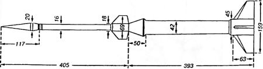
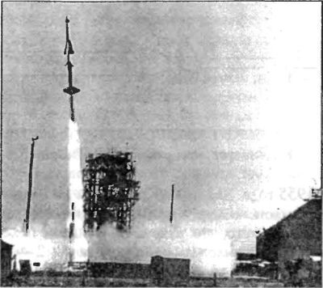
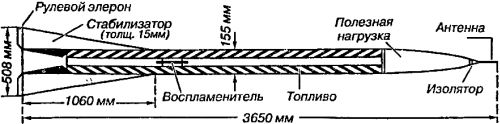

«Redstone» на старте
Запуски по программе «Бампер» доказали необходимость создания новых составных (многоступенчатых) ракет. Только с их помощью можно было выйти на уровень «космических» высот.
Пока же таких ракет не было, приходилось обходиться тем, что есть. Довольно необычную составную ракету придумал доктор Джеймс Ван Аллен. Он предложил производить запуск небольшой ракеты «Дикон» («Deacon») с высоты в 20 километров. В качестве средства доставки ракеты на такую высоту можно было использовать пластмассовые воздушные шары «Скайхук» («Skyhook»).
Первый «Рокун» («Rockoon» образовано от словосочетания «Balloon-launched rocket»), как стала называться эта комбинация ракеты с воздушным шаром, был запущен 29 июля 1952 году с катера береговой охраны «Истуинд» у берегов Гренландии. Пусковая цепь ракеты замыкалась барометрическим реле, когда давление окружающего воздуха падало до заданного уровня (это происходило приблизительно через час после запуска воздушного шара). Такой способ запуска позволял ракете «Дикон» подняться на высоту свыше 80 километров.
Вторая серия экспериментальных пусков «рокунов» была осуществлена в Тихом океане примерно в 300 милях к юго-западу от Сан-Диего (Калифорния) во второй половине июля 1956 года. Кораблем-маткой на этот раз служил американский военный корабль «Колониэл», сопровождаемый эсминцем «Перкинс», который обеспечивал радиолокационное слежение за ракетой. Целью этих запусков было исследование ультрафиолетового и рентгеновского излучений Солнца при периодических вспышках.
Результаты, полученные при запуске первого «рокуна», показали, что для исследования верхних слоев атмосферы могут быть использованы и более крупные ракеты, чем «Ди-кон». Это привело к созданию целой серии двухступенчатых ракет с двигателями на твердом топливе: «Найк-Дикон» («Nike-Deacon»), «Найк-Кэджун» («Nike-Cajun»), «Найк-Аякс» («Nike-Ajax») и другие.
Первые комбинированные ракеты «Найк-Дикон», известные больше под названием «DAN», были готовы для запуска летом 1955 года. Две из них запустили на испытательной станции в Уоллопс-айленд в примерно одинаковых условиях, за исключением того, что ракета № 1 имела полезную нагрузку весом 15,5 килограмма, а ракета № 2 — 17,5 килограмма Запущенная под углом в 75° ракета № 1 достигла максимальной высоты 108 километров, а ракета № 2 поднялась до 107 километров. В основании носового конуса второй ступени ракеты «Найк-Дикон» помещался сферический акселерометр, поджатый пружинами; носовой конус и акселерометр соединялись с корпусом ракеты с помощью кольца-держателя. На высоте 55 километров это кольцо подрывалось специальным зарядом, и нижняя пружина (более сильная) выталкивала акселерометр вместе с носовым конусом вперед по ходу ракеты. Сразу после этого более слабая верхняя пружина отделяла акселерометр от носового конуса.

Если бы двигатели обеих ступеней ракеты «Найк-Дикон» запускались так же, как в ракете «Бампер», то вторая ступень имела бы скорость более высокую, чем оптимальная. Чтобы избежать этого, в работе двигателей была предусмотрена пауза между концом работы двигателя первой и началом работы второй ступени. В силу этого движение ракеты после отделения ускорителя замедлялось, и она могла преодолевать плотные слои атмосферы на сравнительно небольшой скорости. Тем самым снижалась максимальная температура нагрева обшивки носового конуса и кожуха двигателя и уменьшалось аэродинамическое сопротивление. Предварительными расчетами было определено, что оптимальная продолжительность паузы, во время которой вторая ступень по инерции продолжала набирать высоту, должна составлять 10–14 секунд. Для этого во второй ступени (собственно ракета «Дикон») был применен электрический пиропатрон с номинальной задержкой воспламенения порядка 15,5 секунды для обеспечения 12-секундной паузы после окончания работы двигателя первой ступени, продолжавшейся 3,5 секунды. Хотя расчетная точность времени задержки воспламенения пиропатрона не превышала 1 секунды, при первом действительном пуске ракеты «DAN» пауза продолжалась около 17 секунд. Соответственно во время испытаний второй ракеты «DAN» задержка воспламенения была сокращена до 13,5 секунды, благодаря чему паузу удалось уменьшить до 12,8 секунды.

Ракету «Найк-Кэджун», во многом похожую на ракету «Найк-Дикон», можно рассматривать как результат развития последней. Первая ступень ее представляла собой ускоритель ракеты «Найк», вторая — ракету «Кэджун», которая отличалась от ракеты «Дикон» только более совершенным топливом. Первая ракета «Найк-Кэджун» была запущена с базы Уоллопс-айленд 6 июля 1956 года. Запуск осуществлялся под углом 75° к вертикали; стартовый вес несколько превышал 705 килограммов, вес второй ступени был равен 116 килограммам, вес полезной нагрузки — 23 килограмма. Через 3,3 секунды после старта ракета уже достигла высоты 1600 метров и двигалась со скоростью, в три раза превышающей скорость звука. Через 12,3 секунды после отделения ускорителя скорость второй ступени уменьшилась на одну треть, но ракета уже поднялась на 8600 метров. В этот момент включился двигатель ракеты «Кэджун», проработавший в течение 3 секунд, за которые ракета успела достичь высоты 11,9 километра и развить скорость, в 5,7 раза превышающую скорость звука. Через 175 секунд после отделения ускорителя ракета упала в океан, достигнув максимальной высоты 130 километров и покрыв расстояние по прямой более 142 километров.
По заказу ВМС США фирма «Купер Девелопмент» разработала одноступенчатую высотную ракету «ASP» (сокращение от «Atmospheric sounding projectile») с двигателем на твердом топливе. Стартовый вес ракеты «ASP» составлял 111 килограммов, конечный вес равнялся 43 килограммам. Опытные пуски ракет «ASP» проводились на полигонах в Пойнт-Мугу и Уайт Сандс, причем пуск большей частью осуществлялся под углом 30° для получения полных баллистических данных. Используя ракету «ASP» в системе «рокун», можно было бы поднять ее на высоту 195 километров с полезной нагрузкой в 11,5 килограмма или на высоту 152 километров с полной нагрузкой в 23 килограмма. С ускорителем «Найк» ракета «ASP» («Nike-ASP») при полезной нагрузке в 11,5 килограмма должна была достичь высоты 259 километров при условии нормальной задержки воспламенения топлива в двигателе второй ступени.

21 сентября 1956 года с полигона Уоллопс-айленд стартовала еще одна новая ракета — «Террапин» («Terrapin»), спроектированная Университетом штата Мэриленд совместно с фирмой «Рипаблик авиейшн» («Republic aviation») под руководством доктора Фрэда Зингера. Вторая ступень этой ракеты с двигателями на твердом топливе достигла высоты 128 километров и упала в море через 5 минут 36 секунд после старта. Ракета имела длину 4,57 метра и максимальный диаметр — 158 миллиметров. Стартовый вес ракеты — 102 килограмма, а вес научной аппаратуры — 2,7 килограмма.
В конце 1957 года была запущена четырехступенчатая сверхзвуковая опытная ракета «HTV». Она состояла из двух ускорителей ракеты «Найк» (первые две ступени), 137-сантиметровой ракеты «Т-40» на твердом топливе (третья ступень) и 183-сантиметровой ракеты «Т-55» (четвертая ступень). Общая длина всей ракеты равнялась 10,87 метра, а ее стартовый вес — 1270 килограммов. Пауза после окончания работы двигателя первой ступени продолжалась 11 секунд, второй ступени — 5 секунд, третьей ступени — 2 секунды. Максимальная скорость четвертой ступени на высоте 25,5 километра превышала скорость звука в 10,4 раза, а максимальная высота подъема составляла около 305 километров.
В это же самое время группа инженеров из Пенемюнде, руководимая Вернером фон Брауном и обосновавшаяся в Хантсвилле (Алабама), работала над созданием многоступенчатых баллистических ракет для Редстоунского арсенала армии США.
Ракета «Редстоун» («Redstone»), называемая также «Юпитер-А» («Jupiter А»), являлась прямым «потомком» ракеты «Фау-2». Она во многом походила на свой прототип. В качестве топлива в ней тоже применялись этиловый спирт и жидкий кислород. Центробежный турбонасос подачи топлива приводился в действие путем разложения перекиси водорода. Управление также осуществлялось с помощью четырех графитовых газовых рулей, помещенных в потоке истекающих газов. Мало отличий имелось и у пускового стола ракеты; из комплекса наземного оборудования ракеты «Редстоун» был исключен только грунтовой лафет для перевода ее из горизонтального положения в вертикальное. Ракета снималась с тележки транспортера и устанавливалась прямо на пусковой стол с помощью длинной стрелы крана. Отделение головной части ракеты, в которой были заключены боевая часть и приборный отсек, от остальной части ракеты происходило на нисходящей ветви траектории.
Дальность полета ракеты «Редстоун» составляла примерно 320–400 километров. Поскольку эта ракета имела значительно большие габариты, чем ракета «Фау-2» (длина — 21,2 метра, диаметр — 1,8 метра, размах стабилизаторов — 4,4 метра, стартовый вес — 18 000 килограммов, тяга ракетного двигателя при старте — 29500 килограммов), боевая часть должна была весить не менее 5 тонн. Большая полезная нагрузка делала ракету «Редстоун» почти идеальным ускорителем — вернее, первой ступенью — для весьма сложных и тяжелых опытных многоступенчатых ракетных систем. Например, она могла бы нести многоступенчатую систему связок ракет на твердом топливе, и надо сказать, что этот эксперимент не замедлил состояться. Вечером 20 сентября 1956 года с помощью ракеты «Редстоун» № 27 на испытательном полигоне мыса Канаверал была поднята система ракет на твердом топливе. Вторая ступень этой системы (ракета «Редстоун» была первой ступенью) представляла собой связку из четырех ракет на твердом топливе — уменьшенные ракеты типа «Сержант» («Serge-ant»), получившие название «Сержант-Бэби» («Sergeant-Ba-by»). Третьей ступенью системы являлась одна ракета «Сержант-Бэби».
Так как ракета «Редстоун» была жидкостной ракетой с небольшим ускорением, задержка воспламенения в двигателе второй ступени не была нужна. Система показала на летных испытаниях следующие результаты: первая ступень упала в 160 километрах от стартовой позиции, вторая ступень (связка пороховых ракет) упала на расстоянии 614 километров от точки старта, а третья ступень была найдена в 5310 километрах. Эта последняя достигла высоты 1096 километров. В том запуске описанная система, получившая название «Юпитер-С» («Jupiter С»), побила рекорд высоты, установленный ранее ракетой «Бампер-ВАК» № 5.
Жизнь ракеты «Юпитер-С» была короткой, но счастливой. Она использовалась всего два года, но зато именно ей было суждено вывести на орбиту Земли первый искусственный спутник производства США.